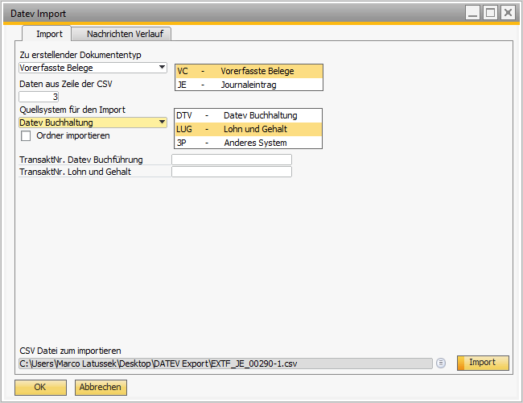

DATEV Import
Overview
The Versino DATEV Import Module is the central interface for importing posting batches in the DATEV CSV format into SAP Business One. It is specifically optimized for German accounting requirements and supports both the import of single files as well as mass processing of entire folders.
Module Access: The import dialog is found under Versino Financial Suite > Import/Export > Import. The import logs can be viewed under Versino Financial Suite > Logs > Import Log.
Important Prerequisite: Reference Field Links
Before the first import can be performed, the reference field links must be configured in SAP Business One. Without this configuration, no import can be performed! Navigate to Administration > Setup > General > Reference Field Links and link the target field "U_VPS_DTV_REF" for the following document types:
- 13 — A/R invoices
- 14 — A/P credit memos
- 18 — A/P invoices
- 19 — A/R credit memos
- 24 — Goods receipts
- 46 — Deliveries
Main Features
Flexible Import (Single File & Folder)
You can either select a single CSV file for the import or activate the "Folder Import" to process all CSV files in a chosen directory one after another.
Safe Processing (Direct Posting & Pre-Entry)
The module offers two modes for creating postings. When direct postings (JE) are selected, a warning message is displayed for safety reasons.
- Pre-Entered Documents (VC): Creates safe drafts that must be reviewed and released before the final posting. This is the recommended method.
- Direct Postings (JE): Posts the batches immediately as journal entries. This option should be used with care.
Source Data Type: DTV vs. LUGS
The module distinguishes two source data types in order to use different transaction codes:
- DTV (DATEV format): Uses the DATEV transaction code from the settings.
- LUGS (Payroll): Uses the separate Payroll transaction code for postings from payroll systems.
Comprehensive Validation & Logging
Before the import, the system checks the data for consistency (e.g. whether accounts, business partners and open periods exist). The entire process is documented live in the "Log" tab of the import dialog with color-coded messages (green for success, light blue for warnings, red for errors).
Branch Support & Consolidation
In multi-branch environments (when OADM.MltpBrnchs != 'N'), a dropdown to select the target branch appears in the import dialog. By default, the main branch is used.
In addition, the module supports consolidation scenarios: if the UDF fields CNSCMP exist in OJDT and JDT1, an additional option "Consolidation" appears in the "Scenario type" dropdown.
Field Mapping Configuration
The system uses an extended configuration interface for DATEV field mappings — with support for all 116 DATEV standard fields.
Supported Mappings
- JournalEntriesMap — Mapping for journal entries
- DocumentsMap — Mapping for documents
- PaymentsMap — Mapping for payments
Special Mapping Settings
- ProcessEmptyBU — Processing empty BU fields
- SalesExemptTaxGroup — Tax group for exempt sales
- ExpenditureExemptTaxGroup — Tax group for exempt expenditures
Validation Error Types
The system reports the following typical validation errors:
- ImportFalscheStartzeile — First import line is less than 3 (DATEV header must be skipped)
- ImportKontoNichtGefunden — G/L account does not exist in SAP Business One
- ImportGpMehrfachDefiniert — Business partner is not uniquely identifiable
- ImportBuchungsperiodeGesperrt — Period is not bookable
- ImportWechselkursFehlt — Exchange rate for the date is missing (for foreign currencies)
Integration with Other VPS Modules
VPS Main Module (Configuration)
Import folder, first import line and the transaction codes for DTV/LUGS are managed centrally in the Financial Suite settings and loaded automatically.
VPS Posting Text Configurator (JE Text Setter)
The posting texts generated by the JE Text Setter can serve as a reference for the assignment of posting types during import, increasing the import accuracy.
Application: Step-by-Step
1. Preparation (One-time Configuration)
Make sure all prerequisites are met:
- Reference Field Links: Configure the links as described in the warning box above.
- Import Settings: Navigate to Versino Financial Suite > Configuration > Settings > DATEV Import and define a default import folder and the start row (usually the third row of the file).
- Transaction Codes: Define the transaction codes for DATEV accounting and payroll postings in the settings.
2. Performing the Import
- Navigate to Versino Financial Suite > Import/Export > Import.
- Use "Choose File" to select the CSV file or activate "Folder Import" and choose a directory.
- Choose the source data type (DTV or LUGS).
- Set the "Journal Entry Type", preferably "Pre-Entered Documents" (VC).
- For multi-branch environments: Select the target branch from the dropdown.
- Click "Import".
- Switch to the "Log" tab to follow the progress and any errors live.

Tips and Troubleshooting
Tips for Daily Work
- Always test with pre-entry: Use "Pre-Entered Documents" (VC) to check data before final posting, especially with uncertain data sources.
- Check the log: The Log tab is your most important tool for error analysis. Red entries show critical errors that must be resolved.
- Preparation is everything: Make sure all required posting periods are open and all accounts and business partners exist in SAP Business One before the import.
- File format: Make sure your CSV files have the DATEV-compliant structure (semicolon as separator, UTF-8 or ANSI character set, at least 3 header rows).
Common Problems and Solutions
Problem: Error message "Reference Field Links not configured".
Solution: This is a critical error. Perform the configuration as described in the warning box above for object codes 13, 14, 18, 19, 24 and 46. Without this setting, no import is possible.
Problem: Error message "First import line too small".
Solution: The DATEV header in the CSV must be skipped. Set the start row in the Financial Suite settings to at least 3.
Problem: The log shows the error "Account not found" or "Business partner not found".
Solution: The import file contains an account or business partner that does not exist in SAP Business One. Create the missing master data and run the import again.
Problem: The log shows the error "Posting period locked".
Solution: Open the corresponding posting period in SAP Business One before starting the import.
Problem: File does not exist / folder is empty.
Solution: Check the path to the CSV file or configure the default import directory in the settings. For folder import: check whether *.csv files are present in the directory.
Problem: Consolidation option does not appear.
Solution: Make sure the UDF field CNSCMP exists in the OJDT and JDT1 tables (at least 2 fields must exist).